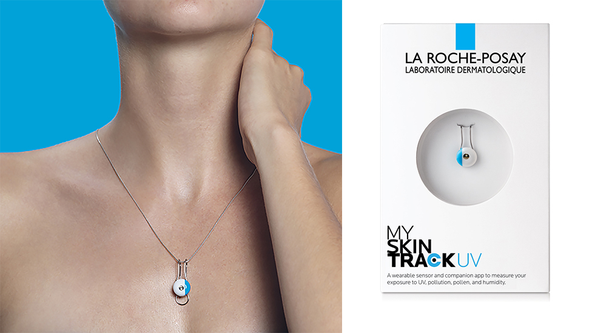
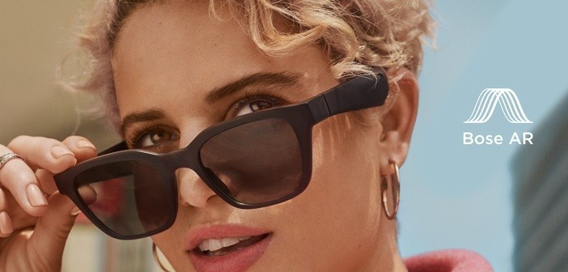

Het eerste college ging over wearables dat werd gegeven door Tim. In dit college werden we meegenomen in de ontwikkelingen van wearables van 1975 tot aan het huidige tijdperk en hoe dit onze communicatie, onze connectie met onszelf en anderen heeft verandert. Het college werd afgesloten met de vraag hoe wearables zich vorm zullen geven in de toekomst.
Na het college heb ik het huiswerk gemaakt, ben verder op onderzoek uitgegaan en heb ik gekeken hoe wearables invloed hebben op mijn leven en hierop gereflecteerd.
Stay in touch with me
‘Stay in touch with me’ is een nieuwe smart tatoeage die het mogelijk maakt om in contact te blijven met diegene waar je geen genoeg van kunt krijgen, maar helaas niet 24/7 bij kunt zijn. Middels de stay in touch tattoo kun je op ieder moment interactie hebben met jouw beloved ones.
Met de smart tattoo komt ook een applicatie die je smart tattoo koppelt met je telefoon voor uitgebreidere contact met elkaar.
De persoon waarmee je in verbinding wilt blijven kunt je opzoeken in de app of pairen door in d e buurt te komen zijn van diegene en dan beide op het pair knopje te drukken.
Hug me and never let go
Wrijf 5 seconden of langer over je tatoeage en de ander ontvangt een lichte squeeze op zijn of haar tatoeage, zo
geef je elkaar knuffels wanneer jullie niet bij elkaar kunnen zijn
You Color my life
Door het meten van je stresslevel kan je zonder moeilijke woorden communiceren naar de ander dat je even druk bent, of je onder veel spanning staat. Wanneer je hier toestemming voor geeft kan de ander een overzicht in de app zien wanneer jouw stresslevel te hoog is, en zo er voor kiezen om met je te communiceren of niet. Zie je dat je liefje de gedurende dag een erg hoog stress level heeft? Laat hem of haar dan weten dat je er voor hem bent en licht zijn of haar tattoo dan op met een zachte trilling en een koele kleur om eventjes tot rust te komen.
De tatoeage werkt als een bedieningspaneel en maakt gebruik van de sensoren: Pressure, Capacitive, en Galvanic skin responses. En geeft de gebruiker feedback door trillingen, een lichte squeeze en oplichting.

L'Oreal My Skin Track pH by La Roche-Posay
De wearable van L’Oreal en La Roche-Posay vind ik erg interessant omdat het de gebruiker met iets kleins een groot verschil maakt.
De wearable meet de UVA en UVB straling en temperatuur, en de hoeveelheid pollen, vervuiling en vocht in de lucht.
Met deze gegevens kan de app ‘My Skin Track’ je van informatie voorzien zoals hoeveel UV straling je huid aan kan die dag maar ook wat de hoeveelheid Pollen is van die dag.
Wat deze wearable voor mij zou betekenen is dat ik mijn huid beter zou kunnen beschermen tegen UV straling en mijn huid meer kan ondersteunen in periodes wanneer ik veel last heb van hooikoorts.

Bose Frame
Met de Bose Frame kun je genieten van de zon, muziek kunt luisteren, en kunt bellen in een. De zonnebril heeft naast ingebouwde speakers ook een microfoon waardoor je naast bellen ook je mobiel kunt aansturen.
In dit jaar komt bose ook uit met Bose Audio augmented reality, door bewegingssensoren en de GPS van je telefoon kan de Bose Frame inspelen op waar je naar kijkt en op jouw ervaring met geluid. Hoe dit zich vorm gaat geven is nog even afwachten. Het zou natuurlijk super tof zijn dan wanneer je voor een restaurant staan, je zonnebril je verteld wat er op de menukaart staat.
Bij wearables dacht ik eigenlijk alleen aan smartwatches, google glasses en smart jewelry zoals de Kring. Na het hoorcollege stond ik dan ook versteld wat er allemaal nog meer om de markt is dan alleen een mogelijk om je gezondheidsgegevens te verzamelen en gemakkelijk te betalen.
De mogelijkheden met wearables zijn dan ook echt onmogelijk, dit is waarom het onderwerp mij zo aanspreekt.
De wearables die inspelen op gezondheid zijn erg belangrijk voor de maatschappij en ik denk ook dat dit een grote rol kan spelen bij het voorkomen van ziektes en aandoeningen.
Wat het meeste van dit onderwerp is bijgebleven zijn de smart tattoos en mensen die hun prothese ombouwen tot wearable met ingebouwde usb-poorten of het stijlen met led verlichting. Ik verwacht dat wearables zoals deze zich dan ook steeds meer gaan ontwikkelen.
Assignment
Research
Reflection